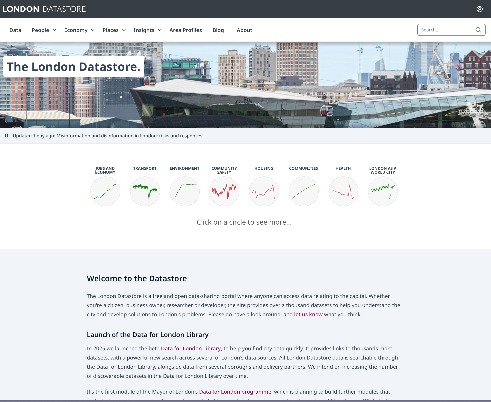
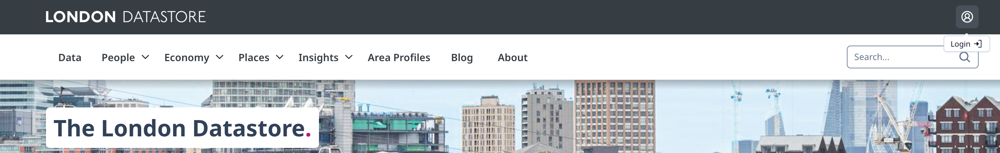
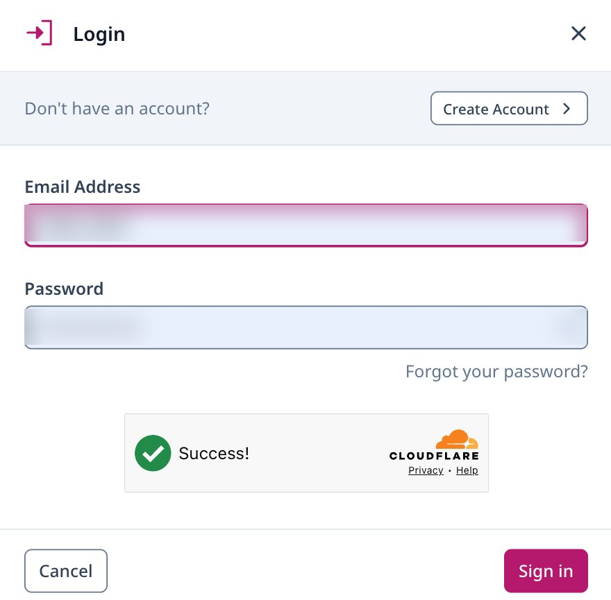
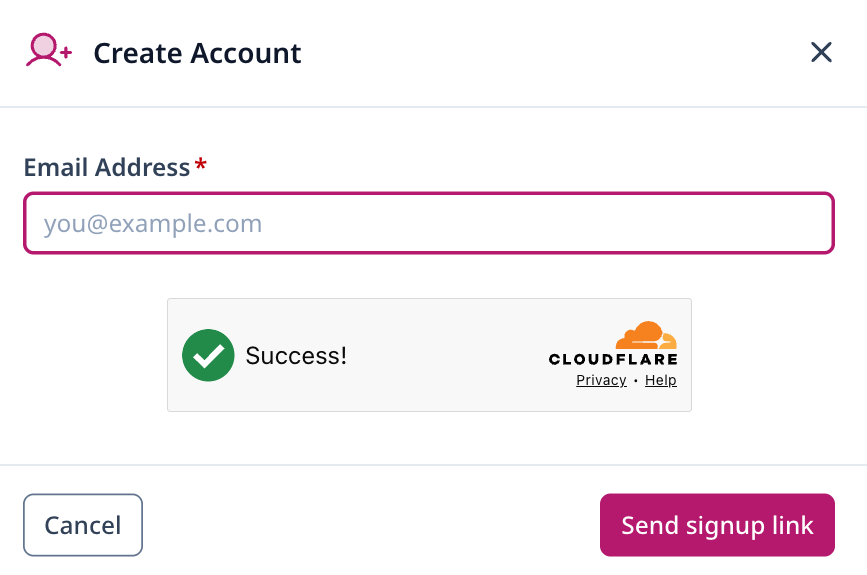
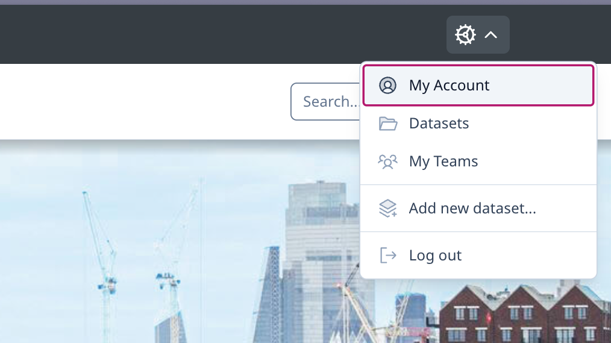
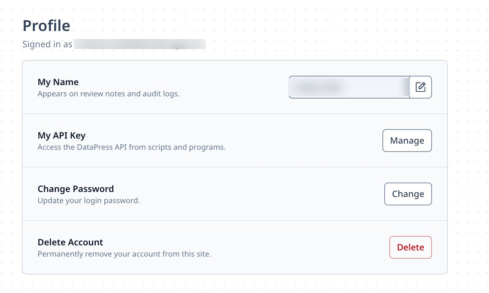
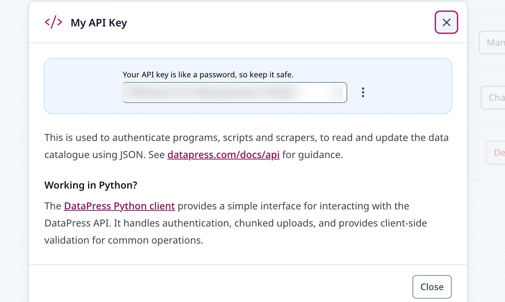

Getting your London Datastore API key
Source:vignettes/get_london_datastore_api_key.Rmd
get_london_datastore_api_key.RmdMost public datasets on the London Datastore can be downloaded without signing in, but a few things need an API key:
- reading private (unpublished) datasets,
- adding, replacing or deleting resources on a dataset you own.
An API key is just a long string of characters that identifies your
account when ldndatar2 talks to the Datastore. This guide
walks through getting one, whether you already have a Datastore account
or are starting from scratch. No prior experience with APIs is
assumed.
The whole process takes a couple of minutes.
1. Go to the London Datastore
Open data.london.gov.uk in your browser. You should see the Datastore homepage.

2. Open the login dialog
In the top-right corner of the page, click Login. It sits just above the search box.

A small dialog will pop up. What you do next depends on whether you already have a Datastore account.

If you already have an account
Enter your email address and password and click Sign in. Skip ahead to step 4.
If you don’t have an account yet
Click Create Account in the top right of the dialog. You’ll be asked for your email address.

Type in your email and click Send signup link. The Datastore will email you a link to finish setting up your account — open the email and follow the link to choose a password. Once that’s done, come back to data.london.gov.uk and sign in using the login dialog from step 2.
3. Open your profile
Once you’re signed in, a small cog icon appears in the top-right of the page. Click it and choose My Account from the menu.

This takes you to your Profile page, which lists a few account settings, including your API key.

4. Reveal and copy your API key
Find the My API Key row and click Manage.
A dialog opens showing your key — a string that looks something like
xxxxxxxx-xxxx-xxxx-xxxx-xxxxxxxxxxxx (a UUID). Click the
copy icon next to the key to copy it to your clipboard.

Keep this key safe. Anyone with your API key can act on the Datastore as you. Don’t paste it into shared documents, don’t commit it to a Git repository, and don’t share it in screenshots or chat messages.
5. Store your key so R can use it
The cleanest way to use the key with ldndatar2 is to
save it as an environment variable called LDS_API_KEY. That
way it isn’t sitting in your R scripts where it might be shared by
accident.
The easiest place to set it is your user-level .Renviron
file. From an R session, run:
usethis::edit_r_environ()This opens .Renviron in your editor. Add a single
line:
Replace the example value with the key you just copied. Save the file and restart R (in RStudio: Session → Restart R) so the new variable is picked up.
You can check it’s working by running:
Sys.getenv("LDS_API_KEY")R should print your key back to you.
6. Use it with ldndatar2
You can now pass the key to any ldndatar2 function that
needs it. For example, to download metadata for a private dataset:
library(ldndatar2)
metadata <- lds_download_metadata(
slug = "your-private-dataset-slug",
api_key = Sys.getenv("LDS_API_KEY")
)Or to add a new resource to a dataset you own:
lds_add_resource(
slug = "your-dataset-slug",
path = "path/to/your-file.csv",
title = "Your resource title",
api_key = Sys.getenv("LDS_API_KEY")
)If something goes wrong
- The Manage button does nothing. Make sure you’re signed in — your email address should be shown at the top of the Profile page.
-
The API call returns a 401 or 403 error.
Double-check the key is copied in full with no extra spaces, and that
you restarted R after editing
.Renviron. - You’ve lost or leaked your key. Go back to the API key dialog (steps 3 and 4) and use the ⋮ menu next to the key to regenerate it. The old key will stop working immediately.